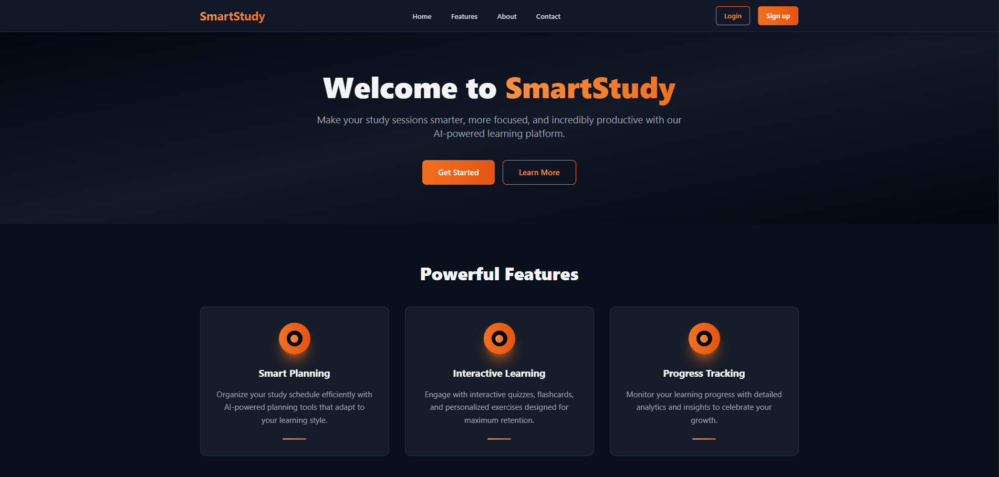
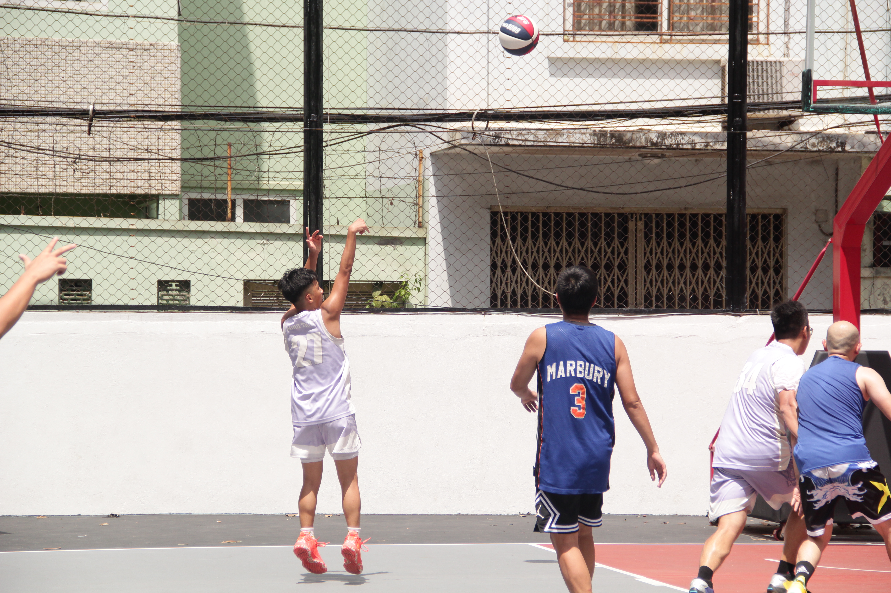
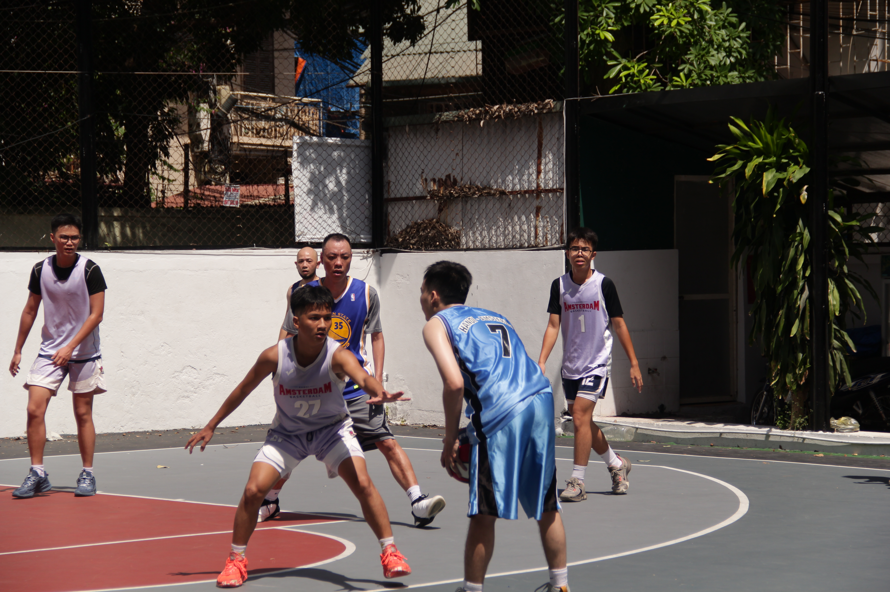
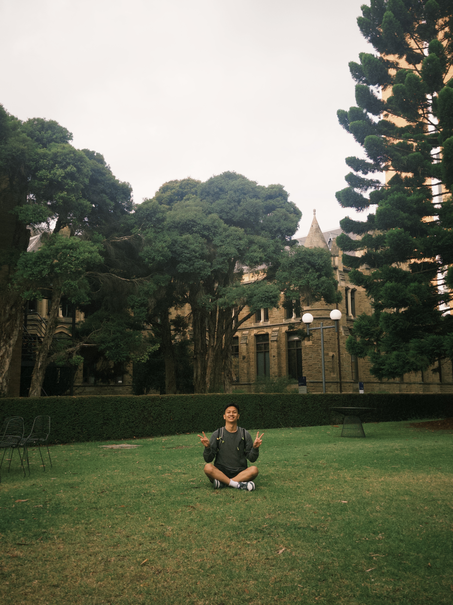
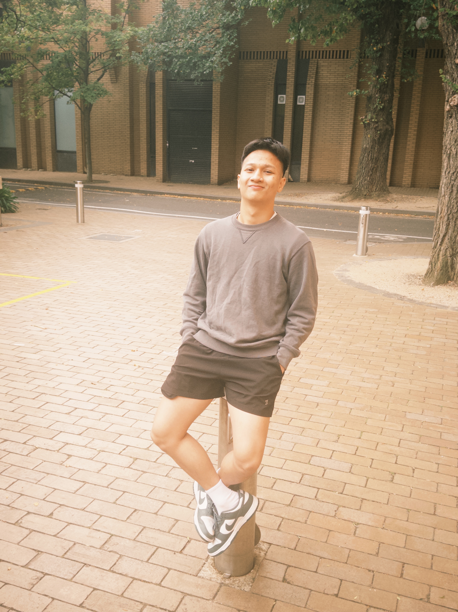
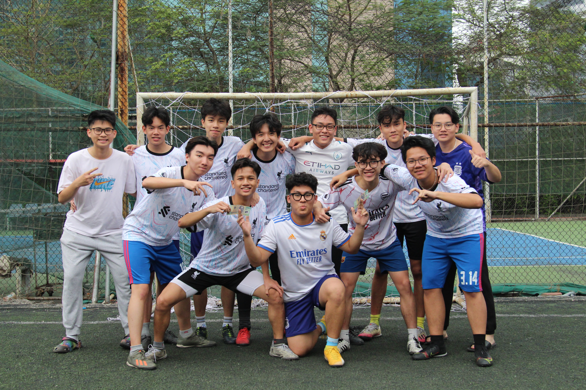
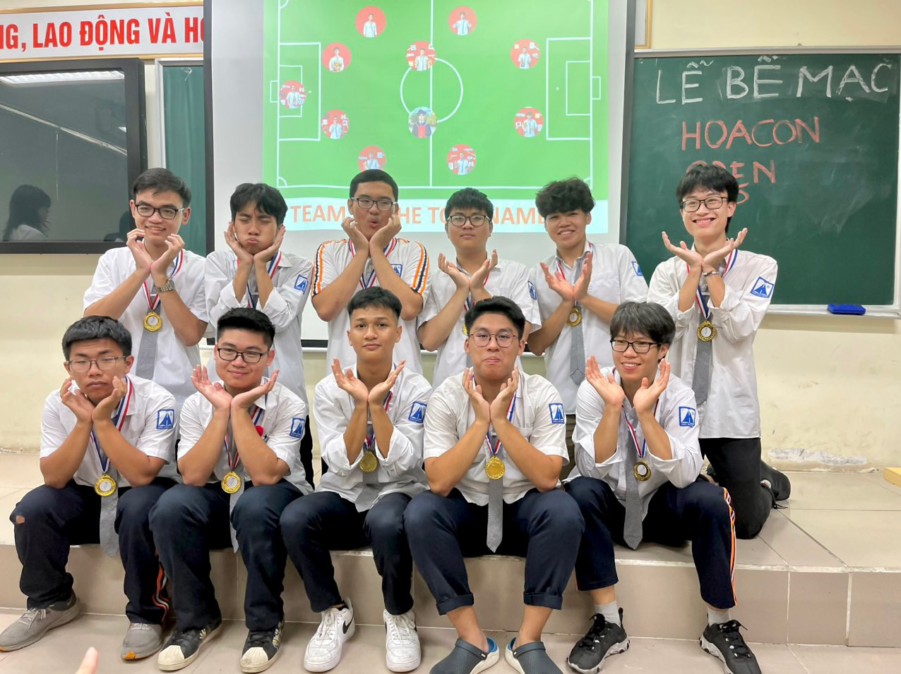
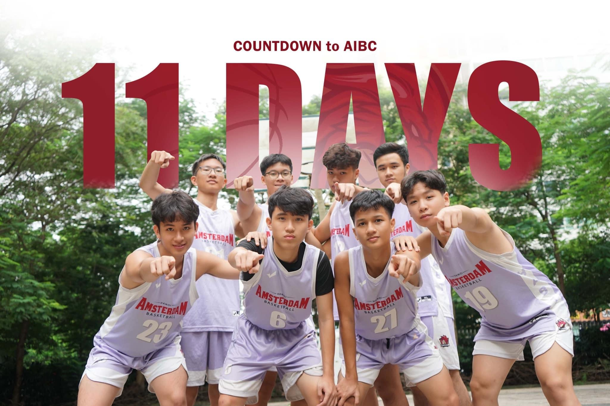

Minh Triet Pham
I'm a final-year Data Science student at the University of Melbourne, graduating this semester, with a strong math background from Hanoi – Amsterdam High School for the Gifted.
My research interest lies in statistical machine learning — using mathematical foundations to control, manipulate, and infer model and algorithms behavior. My first publication, where I am first author, was presented at ABC 2026 — the 8th International Conference on Activity and Behavior Computing — and won the Best Challenge Paper Award; it's now published on IEEE Xplore, available here. Since the start of 2026, I've been working with Dr. Ian Gallagher at the School of Mathematics and Statistics on universality in network embeddings, and from the second half of the year, in parallel, I've also been working with Dr. Jean Honorio at the School of Computing and Information Systems on novel algorithms for social network analysis.
Beyond research, I have hands-on industry experience building AI agent systems and computer vision models for real-world deployment — including a license plate recognition and vehicle-attribute detection system for high-speed road traffic. I've also built Discord-integrated assistant agents and optimized backend infrastructure as an AI Engineer. More of this applied work is in the Projects section below.
Education
Experience
- Continuing collaboration with Dr. Ian Gallagher as a co-author, following an earlier research fellowship under his supervision
- Working together on universality in network embeddings, building on prior fellowship research
- Research topic: Novel Algorithms for Social Network Analysis — supervised by Dr. Jean Honorio
- Developing and analyzing new algorithmic approaches for extracting structural insight from social network data
- Research topic: Universality in Network Embeddings — supervised by Dr. Ian Gallagher
- Analyzed and compared different network embedding algorithms to understand shared structural patterns and representation differences across network datasets
- Built Discord assistant agent integrating Notion and Discord APIs, boosting organizational productivity by 15%
- Optimized FastAPI endpoint performance through architectural refactoring, achieving 10% reduction in API call latency
- Minimized API consumption costs by 25% through LLM prompt engineering and token optimization utilizing LangChain
- Accelerated CI/CD deployment cycles by 20% implementing containerized Docker workflows for infrastructure consistency
- Led 11-week Python course for 10 students achieving 85% deep understanding rate through adaptive curriculum
- Guided all students to complete 2 hands-on projects each while maintaining 90% code quality standards
- Designed flexible curriculum accommodating diverse learning styles and skill levels for varying technical backgrounds
- Processed 1,000,000+ images for training computer vision models achieving high-performance detection accuracy
- Developed automated license plate recognition system detecting car numbers and attributes for 100,000+ vehicle images in high-speed road systems using YOLO and TensorFlow
- Implemented face recognition model for automated attendance checking system using OpenCV
- Crawled and curated 1,000,000+ images from diverse sources to build training datasets for CV models
- Delivered personalized mathematics instruction across multiple levels, improving student performance by 50% on average
- Developed customized lesson plans tailored to individual learning gaps and accelerated concept comprehension
- Adapted pedagogical approaches to diverse learner needs across 3 years of personalized one-on-one tutoring
Publications
Deep Attention-based Sequential Ensemble Learning for BLE-Based Indoor Localization in Care Facilities
- Proposed DASEL, a novel sequential deep learning framework that reconceptualizes BLE-based indoor localization as a sequential learning problem rather than independent-window classification
- Achieved a macro F1 score of 0.4438 — a 53.1% improvement over the best traditional ML baseline — evaluated on 1.1M+ real-world BLE sensor readings from a care facility
- Designed a two-level hierarchical ensemble combining multi-seed bidirectional GRU networks with attention mechanisms and multi-directional sliding windows for robust inference
- Introduced frequency-based feature engineering to replace unstable raw RSSI signals, enabling device-agnostic deployment across heterogeneous hardware
Projects

SmartStudy – AI-Powered Learning Platform
A full-stack intelligent study platform designed to act as a personal AI tutor and study companion. The system engages students in interactive learning conversations, providing real-time guidance and explanations across study topics. Alongside tutoring, it intelligently manages and tracks personalized study checklists — helping students stay organized, monitor their progress, and systematically work through their learning goals.
View Project
RAG – Migration Act Assistant
An intelligent legal assistant designed to simplify access to Australia's Migration Act documentation. Leveraging Retrieval-Augmented Generation (RAG), the system introduces a novel hierarchical search structure and optimization algorithm that reduces search time and embedding resource consumption by over 10,000x compared to naive approaches — while maintaining a scalable architecture that supports unlimited document extension.
View Project
LinkedIn Talent Search Agent
An AI-powered recruitment automation system that streamlines the talent sourcing process. Given a job description, the agent autonomously navigates LinkedIn, identifies the most relevant candidates, and delivers structured summaries — significantly reducing manual screening time and improving hiring efficiency.
View ProjectFutureTrack – Market Analysis
A large-scale data-driven platform that forecasts employment and market trends across 40+ academic majors over the next decade. The system incorporates automated web scraping pipelines to aggregate career path information and academic guidance, delivering actionable insights to 200+ students for informed career decision-making.
View Project
Australian Accident Research
A comprehensive data analysis and machine learning study examining the impact of infrastructure-related factors — including road geometry, surface conditions, and lighting — on traffic accident severity across Australia. Developed and evaluated multiple predictive ML models to support evidence-based road safety improvements and policy recommendations.
View ProjectHonors & Awards
Community & Leadership
- Leading a group of 20 first-year students through their transition into university life, fostering connection and a sense of belonging within the community
- Providing guidance on academic strategies, navigating university resources, and addressing challenges that come with the early stages of university life
- Committed to over 2 years of consistent weekly service including church maintenance and cleaning
- Guiding and welcoming new members to help them feel at home within the community
- Organizing monthly celebration and social activities to strengthen bonds and foster a warm, inclusive environment
- Connecting people with one another and contributing to a supportive, close-knit community
My Picture









